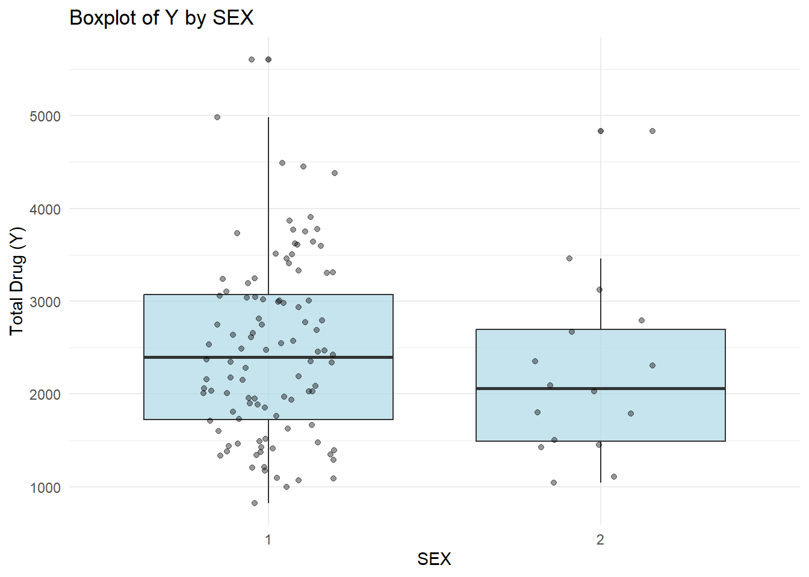
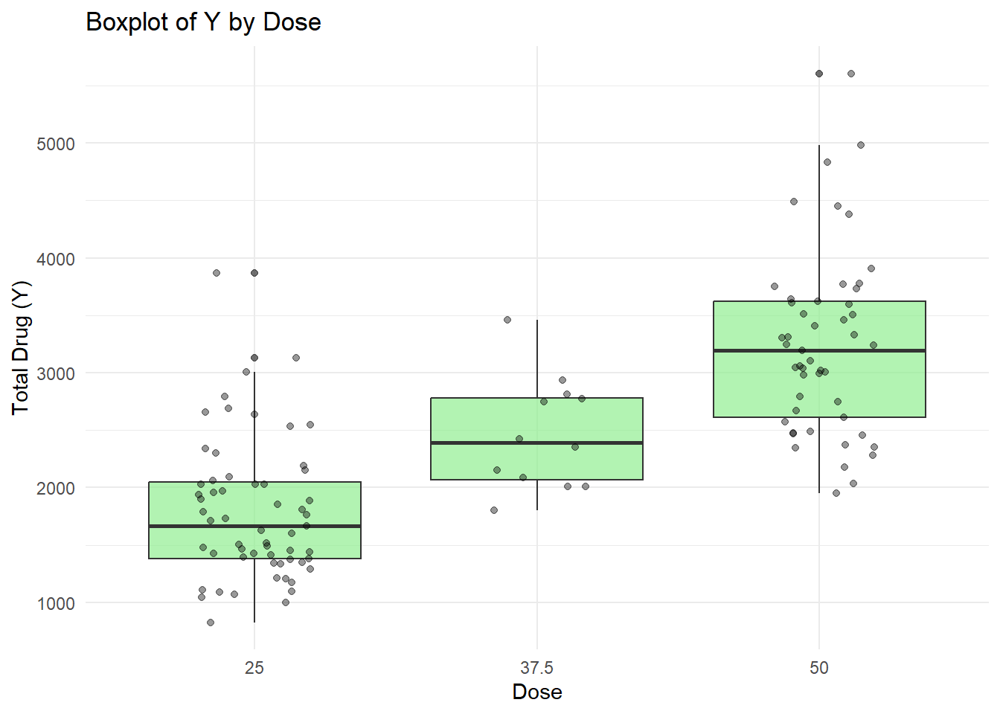

#install packages that are missing if necessary
#install.packages("tidymodels")
#install.packages("pander")
#install.packages("yardstick")
library(tidyverse)
library(readxl)
library(ggplot2)
library(tidymodels)
library(here)
library(skimr)
library(dplyr)
library(knitr)
library(pander)
library(patchwork)
library(corrplot)
library(yardstick)fitting-exercise
Model Fitting
Loading packages
loading and viewing a preview of the data
mavoglurant_data <- read.csv(here("fitting-exercise", "Mavoglurant_A2121_nmpk.csv")) #loaddatausingherefunctionsummary(mavoglurant_data) ID CMT EVID EVI2
Min. :793.0 Min. :1.000 Min. :0.00000 Min. :0.0000
1st Qu.:832.0 1st Qu.:2.000 1st Qu.:0.00000 1st Qu.:0.0000
Median :860.0 Median :2.000 Median :0.00000 Median :0.0000
Mean :858.8 Mean :1.926 Mean :0.07394 Mean :0.1613
3rd Qu.:888.0 3rd Qu.:2.000 3rd Qu.:0.00000 3rd Qu.:0.0000
Max. :915.0 Max. :2.000 Max. :1.00000 Max. :4.0000
MDV DV LNDV AMT
Min. :0.00000 Min. : 0.00 Min. :0.000 Min. : 0.000
1st Qu.:0.00000 1st Qu.: 23.52 1st Qu.:3.158 1st Qu.: 0.000
Median :0.00000 Median : 74.20 Median :4.306 Median : 0.000
Mean :0.09373 Mean : 179.93 Mean :4.085 Mean : 2.763
3rd Qu.:0.00000 3rd Qu.: 283.00 3rd Qu.:5.645 3rd Qu.: 0.000
Max. :1.00000 Max. :1730.00 Max. :7.456 Max. :50.000
TIME DOSE OCC RATE
Min. : 0.000 Min. :25.00 Min. :1.000 Min. : 0.00
1st Qu.: 0.583 1st Qu.:25.00 1st Qu.:1.000 1st Qu.: 0.00
Median : 2.250 Median :37.50 Median :1.000 Median : 0.00
Mean : 5.851 Mean :37.37 Mean :1.378 Mean : 16.55
3rd Qu.: 6.363 3rd Qu.:50.00 3rd Qu.:2.000 3rd Qu.: 0.00
Max. :48.217 Max. :50.00 Max. :2.000 Max. :300.00
AGE SEX RACE WT
Min. :18.0 Min. :1.000 Min. : 1.000 Min. : 56.60
1st Qu.:26.0 1st Qu.:1.000 1st Qu.: 1.000 1st Qu.: 73.30
Median :31.0 Median :1.000 Median : 1.000 Median : 82.60
Mean :32.9 Mean :1.128 Mean : 7.415 Mean : 83.16
3rd Qu.:40.0 3rd Qu.:1.000 3rd Qu.: 2.000 3rd Qu.: 90.60
Max. :50.0 Max. :2.000 Max. :88.000 Max. :115.30
HT
Min. :1.520
1st Qu.:1.710
Median :1.780
Mean :1.762
3rd Qu.:1.820
Max. :1.930 skim(mavoglurant_data)| Name | mavoglurant_data |
| Number of rows | 2678 |
| Number of columns | 17 |
| _______________________ | |
| Column type frequency: | |
| numeric | 17 |
| ________________________ | |
| Group variables | None |
Variable type: numeric
| skim_variable | n_missing | complete_rate | mean | sd | p0 | p25 | p50 | p75 | p100 | hist |
|---|---|---|---|---|---|---|---|---|---|---|
| ID | 0 | 1 | 858.81 | 34.08 | 793.00 | 832.00 | 860.00 | 888.00 | 915.00 | ▅▆▇▇▇ |
| CMT | 0 | 1 | 1.93 | 0.26 | 1.00 | 2.00 | 2.00 | 2.00 | 2.00 | ▁▁▁▁▇ |
| EVID | 0 | 1 | 0.07 | 0.26 | 0.00 | 0.00 | 0.00 | 0.00 | 1.00 | ▇▁▁▁▁ |
| EVI2 | 0 | 1 | 0.16 | 0.70 | 0.00 | 0.00 | 0.00 | 0.00 | 4.00 | ▇▁▁▁▁ |
| MDV | 0 | 1 | 0.09 | 0.29 | 0.00 | 0.00 | 0.00 | 0.00 | 1.00 | ▇▁▁▁▁ |
| DV | 0 | 1 | 179.93 | 226.28 | 0.00 | 23.52 | 74.20 | 283.00 | 1730.00 | ▇▂▁▁▁ |
| LNDV | 0 | 1 | 4.08 | 1.88 | 0.00 | 3.16 | 4.31 | 5.64 | 7.46 | ▃▃▇▇▅ |
| AMT | 0 | 1 | 2.76 | 10.32 | 0.00 | 0.00 | 0.00 | 0.00 | 50.00 | ▇▁▁▁▁ |
| TIME | 0 | 1 | 5.85 | 8.91 | 0.00 | 0.58 | 2.25 | 6.36 | 48.22 | ▇▁▁▁▁ |
| DOSE | 0 | 1 | 37.37 | 12.05 | 25.00 | 25.00 | 37.50 | 50.00 | 50.00 | ▇▁▁▁▇ |
| OCC | 0 | 1 | 1.38 | 0.49 | 1.00 | 1.00 | 1.00 | 2.00 | 2.00 | ▇▁▁▁▅ |
| RATE | 0 | 1 | 16.55 | 61.88 | 0.00 | 0.00 | 0.00 | 0.00 | 300.00 | ▇▁▁▁▁ |
| AGE | 0 | 1 | 32.90 | 8.87 | 18.00 | 26.00 | 31.00 | 40.00 | 50.00 | ▆▇▅▅▅ |
| SEX | 0 | 1 | 1.13 | 0.33 | 1.00 | 1.00 | 1.00 | 1.00 | 2.00 | ▇▁▁▁▁ |
| RACE | 0 | 1 | 7.41 | 21.97 | 1.00 | 1.00 | 1.00 | 2.00 | 88.00 | ▇▁▁▁▁ |
| WT | 0 | 1 | 83.16 | 12.48 | 56.60 | 73.30 | 82.60 | 90.60 | 115.30 | ▂▇▇▅▁ |
| HT | 0 | 1 | 1.76 | 0.08 | 1.52 | 1.71 | 1.78 | 1.82 | 1.93 | ▁▃▆▇▃ |
We want to visualise the data in a plot. We want to plot DV (the outcome) as a function of time, stratified by DOSE and using ID as a grouping factor.
DV_time_dose_curve <- ggplot(mavoglurant_data, aes(x = TIME, y = DV, group = ID, colour = DOSE)) + geom_line(alpha = 0.7) + labs(title = "DV vs Time by Dose", x = "Time", y = "DV", colour = "Dose")
print(DV_time_dose_curve)There is repetiton in the data. We only want to keep observations with OCC=1. We will use the filter function.
mavoglurant_data_1 <- filter(mavoglurant_data, OCC == 1) #make a dataset with only OCC 1 rowsWe want a data frames where we have the total dose for each individual and where we exclude data where Time is zero.
DV_data <- mavoglurant_data_1 |> filter(TIME !=0) |> #removes values where TIME=0
group_by(ID) |>#Groups the data by ID so that we have all values for a single individual together
summarise(Y= sum(DV))Next we develop an additional data frames where Time is zero and join this to the previous one.
mavoglurant_time_0 <- mavoglurant_data_1 |>filter(TIME==0) #filtering for when time is zero
merged_mavoglurant <- merge(DV_data, mavoglurant_time_0, by = "ID") #using the merge function to join
print(merged_mavoglurant) ID Y CMT EVID EVI2 MDV DV LNDV AMT TIME DOSE OCC RATE AGE SEX RACE
1 793 2690.52 1 1 1 1 0 0 25.0 0 25.0 1 75 42 1 2
2 794 2638.81 1 1 1 1 0 0 25.0 0 25.0 1 150 24 1 2
3 795 2149.61 1 1 1 1 0 0 25.0 0 25.0 1 150 31 1 1
4 796 1788.89 1 1 1 1 0 0 25.0 0 25.0 1 150 46 2 1
5 797 3126.37 1 1 1 1 0 0 25.0 0 25.0 1 150 41 2 2
6 798 2336.89 1 1 1 1 0 0 25.0 0 25.0 1 150 27 1 2
7 799 3007.20 1 1 1 1 0 0 25.0 0 25.0 1 150 23 1 1
8 800 2795.65 1 1 1 1 0 0 25.0 0 25.0 1 150 20 1 88
9 801 3865.79 1 1 1 1 0 0 25.0 0 25.0 1 150 23 1 2
10 802 1761.62 1 1 1 1 0 0 25.0 0 25.0 1 150 28 1 1
11 803 2548.98 1 1 1 1 0 0 25.0 0 25.0 1 150 46 1 1
12 804 1967.61 1 1 1 1 0 0 25.0 0 25.0 1 150 22 1 1
13 805 2352.78 1 1 1 1 0 0 37.5 0 37.5 1 225 43 2 1
14 806 1800.79 1 1 1 1 0 0 37.5 0 37.5 1 225 50 2 1
15 807 2009.16 1 1 1 1 0 0 37.5 0 37.5 1 225 19 1 2
16 808 2815.26 1 1 1 1 0 0 37.5 0 37.5 1 225 26 1 2
17 809 2008.52 1 1 1 1 0 0 37.5 0 37.5 1 225 39 1 1
18 810 2933.99 1 1 1 1 0 0 37.5 0 37.5 1 225 46 1 1
19 811 2748.86 1 1 1 1 0 0 37.5 0 37.5 1 225 41 1 1
20 812 2154.56 1 1 1 1 0 0 37.5 0 37.5 1 225 30 1 1
21 813 3462.59 1 1 1 1 0 0 37.5 0 37.5 1 225 49 1 1
22 814 2771.69 1 1 1 1 0 0 37.5 0 37.5 1 225 28 1 1
23 815 2423.89 1 1 1 1 0 0 37.5 0 37.5 1 225 25 1 1
24 816 2084.87 1 1 1 1 0 0 37.5 0 37.5 1 225 37 1 1
25 817 4984.57 1 1 1 1 0 0 50.0 0 50.0 1 300 47 1 1
26 818 2572.45 1 1 1 1 0 0 50.0 0 50.0 1 300 27 1 1
27 819 2667.02 1 1 1 1 0 0 50.0 0 50.0 1 300 45 2 1
28 820 3004.21 1 1 1 1 0 0 50.0 0 50.0 1 300 28 1 1
29 821 4834.65 1 1 1 1 0 0 50.0 0 50.0 1 300 42 2 1
30 822 5606.58 1 1 1 1 0 0 50.0 0 50.0 1 300 29 1 1
31 823 3408.61 1 1 1 1 0 0 50.0 0 50.0 1 300 39 1 1
32 824 4493.01 1 1 1 1 0 0 50.0 0 50.0 1 300 38 1 1
33 825 3513.71 1 1 1 1 0 0 50.0 0 50.0 1 300 32 1 2
34 826 3905.93 1 1 1 1 0 0 50.0 0 50.0 1 300 47 1 2
35 827 3644.37 1 1 1 1 0 0 50.0 0 50.0 1 300 28 1 2
36 828 2746.20 1 1 1 1 0 0 50.0 0 50.0 1 300 40 1 2
37 829 1424.00 1 1 1 1 0 0 25.0 0 25.0 1 150 44 2 1
38 830 1108.17 1 1 1 1 0 0 25.0 0 25.0 1 150 48 2 2
39 831 3104.70 1 1 1 1 0 0 50.0 0 50.0 1 300 45 1 1
40 832 2177.20 1 1 1 1 0 0 50.0 0 50.0 1 300 31 1 88
41 833 2193.20 1 1 1 1 0 0 25.0 0 25.0 1 150 30 1 2
42 834 1810.59 1 1 1 1 0 0 25.0 0 25.0 1 150 27 1 2
43 835 1666.10 1 1 1 1 0 0 25.0 0 25.0 1 150 45 1 2
44 836 2027.39 1 1 1 1 0 0 25.0 0 25.0 1 150 20 1 1
45 837 2345.50 1 1 1 1 0 0 50.0 0 50.0 1 300 31 1 1
46 838 3310.20 1 1 1 1 0 0 50.0 0 50.0 1 300 46 1 1
47 840 3777.20 1 1 1 1 0 0 50.0 0 50.0 1 300 37 1 1
48 841 2063.43 1 1 1 1 0 0 25.0 0 25.0 1 150 40 1 2
49 842 4378.37 1 1 1 1 0 0 50.0 0 50.0 1 300 18 1 2
50 843 1853.91 1 1 1 1 0 0 25.0 0 25.0 1 150 24 1 88
51 844 3774.00 1 1 1 1 0 0 50.0 0 50.0 1 300 35 1 2
52 845 1625.46 1 1 1 1 0 0 25.0 0 25.0 1 150 30 1 2
53 846 1044.07 1 1 1 1 0 0 25.0 0 25.0 1 150 40 2 1
54 847 1423.70 1 1 1 1 0 0 25.0 0 25.0 1 150 39 1 1
55 848 3037.39 1 1 1 1 0 0 50.0 0 50.0 1 300 24 1 1
56 849 2610.00 1 1 1 1 0 0 50.0 0 50.0 1 300 25 1 1
57 850 3193.98 1 1 1 1 0 0 50.0 0 50.0 1 300 37 1 1
58 851 1602.63 1 1 1 1 0 0 25.0 0 25.0 1 150 28 1 2
59 852 2457.68 1 1 1 1 0 0 50.0 0 50.0 1 300 30 1 2
60 853 1474.60 1 1 1 1 0 0 25.0 0 25.0 1 150 44 1 1
61 854 997.89 1 1 1 1 0 0 25.0 0 25.0 1 150 43 1 1
62 855 4451.84 1 1 1 1 0 0 50.0 0 50.0 1 300 24 1 88
63 857 3507.10 1 1 1 1 0 0 50.0 0 50.0 1 300 22 1 1
64 858 3332.16 1 1 1 1 0 0 50.0 0 50.0 1 300 18 1 1
65 859 3733.10 1 1 1 1 0 0 50.0 0 50.0 1 300 34 1 2
66 860 1886.48 1 1 1 1 0 0 25.0 0 25.0 1 150 47 1 1
67 861 1175.69 1 1 1 1 0 0 25.0 0 25.0 1 150 33 1 1
68 862 1517.24 1 1 1 1 0 0 25.0 0 25.0 1 150 18 1 1
69 863 2036.20 1 1 1 1 0 0 50.0 0 50.0 1 300 18 1 2
70 864 2532.10 1 1 1 1 0 0 25.0 0 25.0 1 150 30 1 2
71 865 1392.78 1 1 1 1 0 0 25.0 0 25.0 1 150 20 1 2
72 866 2372.70 1 1 1 1 0 0 50.0 0 50.0 1 300 39 1 1
73 867 3239.66 1 1 1 1 0 0 50.0 0 50.0 1 300 23 1 1
74 868 1935.24 1 1 1 1 0 0 25.0 0 25.0 1 150 24 1 1
75 869 1344.35 1 1 1 1 0 0 25.0 0 25.0 1 150 30 1 1
76 870 1411.57 1 1 1 1 0 0 25.0 0 25.0 1 150 26 1 1
77 871 1712.00 1 1 1 1 0 0 25.0 0 25.0 1 150 19 1 1
78 872 2978.20 1 1 1 1 0 0 50.0 0 50.0 1 300 49 1 1
79 873 1948.80 1 1 1 1 0 0 50.0 0 50.0 1 300 39 1 1
80 874 1346.62 1 1 1 1 0 0 25.0 0 25.0 1 150 41 1 2
81 875 1380.61 1 1 1 1 0 0 25.0 0 25.0 1 150 19 1 1
82 876 1214.97 1 1 1 1 0 0 25.0 0 25.0 1 150 49 1 1
83 877 3622.80 1 1 1 1 0 0 50.0 0 50.0 1 300 32 1 2
84 878 3751.90 1 1 1 1 0 0 50.0 0 50.0 1 300 42 1 1
85 879 2092.89 1 1 1 1 0 0 25.0 0 25.0 1 150 39 2 88
86 880 3458.43 1 1 1 1 0 0 50.0 0 50.0 1 300 39 2 1
87 881 2789.70 1 1 1 1 0 0 50.0 0 50.0 1 300 49 2 7
88 882 2303.58 1 1 1 1 0 0 25.0 0 25.0 1 150 28 2 1
89 883 2030.50 1 1 1 1 0 0 25.0 0 25.0 1 150 26 1 88
90 884 1439.57 1 1 1 1 0 0 25.0 0 25.0 1 150 27 1 2
91 885 2471.60 1 1 1 1 0 0 50.0 0 50.0 1 300 45 1 2
92 886 1097.60 1 1 1 1 0 0 25.0 0 25.0 1 150 28 1 1
93 887 1464.29 1 1 1 1 0 0 25.0 0 25.0 1 150 25 1 1
94 888 3243.29 1 1 1 1 0 0 50.0 0 50.0 1 300 21 1 88
95 889 2654.70 1 1 1 1 0 0 25.0 0 25.0 1 150 37 1 2
96 890 3609.33 1 1 1 1 0 0 50.0 0 50.0 1 300 29 1 1
97 891 3060.70 1 1 1 1 0 0 50.0 0 50.0 1 300 25 1 2
98 892 1374.48 1 1 1 1 0 0 25.0 0 25.0 1 150 25 1 1
99 893 1451.50 1 1 1 1 0 0 25.0 0 25.0 1 150 36 2 1
100 894 1503.55 1 1 1 1 0 0 25.0 0 25.0 1 150 35 2 1
101 895 2027.60 1 1 1 1 0 0 25.0 0 25.0 1 150 28 2 2
102 896 3046.72 1 1 1 1 0 0 50.0 0 50.0 1 300 24 1 1
103 897 2485.00 1 1 1 1 0 0 50.0 0 50.0 1 300 29 1 1
104 898 1731.80 1 1 1 1 0 0 25.0 0 25.0 1 150 26 1 88
105 899 1958.27 1 1 1 1 0 0 25.0 0 25.0 1 150 26 1 1
106 900 2996.40 1 1 1 1 0 0 50.0 0 50.0 1 300 26 1 1
107 901 1288.64 1 1 1 1 0 0 25.0 0 25.0 1 150 28 1 2
108 902 2353.40 1 1 1 1 0 0 50.0 0 50.0 1 300 37 1 2
109 903 3016.30 1 1 1 1 0 0 50.0 0 50.0 1 300 45 1 1
110 905 3306.15 1 1 1 1 0 0 50.0 0 50.0 1 300 38 1 1
111 906 826.43 1 1 1 1 0 0 25.0 0 25.0 1 150 30 1 2
112 907 1338.20 1 1 1 1 0 0 25.0 0 25.0 1 150 40 1 1
113 908 1490.93 1 1 1 1 0 0 25.0 0 25.0 1 150 41 1 7
114 909 1067.56 1 1 1 1 0 0 25.0 0 25.0 1 150 37 1 1
115 910 2472.90 1 1 1 1 0 0 50.0 0 50.0 1 300 36 1 1
116 911 1085.93 1 1 1 1 0 0 25.0 0 25.0 1 150 41 1 1
117 912 2278.97 1 1 1 1 0 0 50.0 0 50.0 1 300 28 1 1
118 913 1898.00 1 1 1 1 0 0 25.0 0 25.0 1 150 27 1 2
119 914 1208.74 1 1 1 1 0 0 25.0 0 25.0 1 150 31 1 1
120 915 3593.55 1 1 1 1 0 0 50.0 0 50.0 1 300 23 1 1
WT HT
1 94.3 1.769997
2 80.4 1.759850
3 71.8 1.809847
4 77.4 1.649993
5 64.3 1.560052
6 74.1 1.829862
7 87.9 1.850107
8 61.9 1.730095
9 65.3 1.649839
10 103.5 1.840020
11 83.0 1.779870
12 68.7 1.700058
13 64.4 1.560084
14 69.8 1.640057
15 86.1 1.910054
16 84.5 1.770060
17 99.1 1.809982
18 71.2 1.669993
19 82.6 1.830179
20 85.4 1.860186
21 76.1 1.700070
22 78.3 1.719903
23 73.3 1.690144
24 102.1 1.809858
25 79.5 1.749972
26 97.5 1.849933
27 80.7 1.659881
28 83.2 1.740016
29 58.0 1.580118
30 85.7 1.770157
31 74.2 1.749948
32 70.4 1.640153
33 78.9 1.740008
34 89.3 1.689903
35 96.8 1.900156
36 74.8 1.650143
37 85.4 1.640050
38 79.5 1.620071
39 99.1 1.809982
40 88.3 1.759875
41 91.6 1.740143
42 69.2 1.810115
43 92.0 1.690046
44 80.5 1.879841
45 85.9 1.719881
46 94.5 1.779874
47 101.8 1.829941
48 102.7 1.879912
49 56.6 1.740218
50 70.7 1.780164
51 81.6 1.650067
52 90.6 1.789882
53 83.8 1.680030
54 82.1 1.810010
55 78.7 1.790083
56 79.8 1.859849
57 74.9 1.760000
58 73.2 1.729925
59 85.2 1.809879
60 90.1 1.779908
61 99.8 1.800072
62 58.4 1.660126
63 69.4 1.820068
64 73.1 1.749978
65 88.0 1.840086
66 80.3 1.699861
67 99.3 1.799946
68 96.0 1.909821
69 102.7 1.809949
70 71.4 1.679921
71 86.0 1.680014
72 89.3 1.719864
73 72.4 1.840202
74 70.4 1.740103
75 74.3 1.800082
76 102.5 1.909892
77 72.7 1.710081
78 97.3 1.800026
79 75.7 1.780081
80 81.0 1.749966
81 66.2 1.800092
82 80.9 1.810146
83 92.2 1.799898
84 92.9 1.760028
85 58.2 1.619872
86 69.8 1.520031
87 69.6 1.580004
88 62.3 1.750123
89 63.6 1.719924
90 75.1 1.850127
91 93.8 1.780146
92 85.9 1.870176
93 87.1 1.839879
94 81.9 1.770065
95 78.6 1.740039
96 68.8 1.810025
97 81.0 1.780172
98 84.6 1.710058
99 88.2 1.710089
100 90.0 1.679941
101 58.9 1.580133
102 90.1 1.799956
103 115.3 1.930120
104 72.2 1.700092
105 70.5 1.679958
106 82.1 1.780073
107 77.5 1.819881
108 99.1 1.779932
109 90.0 1.730034
110 83.4 1.819932
111 105.1 1.879883
112 97.3 1.860153
113 85.8 1.789940
114 85.4 1.820067
115 84.4 1.730002
116 77.1 1.589927
117 113.2 1.909995
118 89.0 1.829859
119 110.8 1.869859
120 96.3 1.820081summary(merged_mavoglurant) ID Y CMT EVID EVI2
Min. :793.0 Min. : 826.4 Min. :1 Min. :1 Min. :1
1st Qu.:822.8 1st Qu.:1700.5 1st Qu.:1 1st Qu.:1 1st Qu.:1
Median :853.5 Median :2349.1 Median :1 Median :1 Median :1
Mean :853.7 Mean :2445.4 Mean :1 Mean :1 Mean :1
3rd Qu.:884.2 3rd Qu.:3050.2 3rd Qu.:1 3rd Qu.:1 3rd Qu.:1
Max. :915.0 Max. :5606.6 Max. :1 Max. :1 Max. :1
MDV DV LNDV AMT TIME
Min. :1 Min. :0 Min. :0 Min. :25.00 Min. :0
1st Qu.:1 1st Qu.:0 1st Qu.:0 1st Qu.:25.00 1st Qu.:0
Median :1 Median :0 Median :0 Median :37.50 Median :0
Mean :1 Mean :0 Mean :0 Mean :36.46 Mean :0
3rd Qu.:1 3rd Qu.:0 3rd Qu.:0 3rd Qu.:50.00 3rd Qu.:0
Max. :1 Max. :0 Max. :0 Max. :50.00 Max. :0
DOSE OCC RATE AGE SEX
Min. :25.00 Min. :1 Min. : 75.0 Min. :18.00 Min. :1.000
1st Qu.:25.00 1st Qu.:1 1st Qu.:150.0 1st Qu.:26.00 1st Qu.:1.000
Median :37.50 Median :1 Median :225.0 Median :31.00 Median :1.000
Mean :36.46 Mean :1 Mean :218.1 Mean :33.00 Mean :1.133
3rd Qu.:50.00 3rd Qu.:1 3rd Qu.:300.0 3rd Qu.:40.25 3rd Qu.:1.000
Max. :50.00 Max. :1 Max. :300.0 Max. :50.00 Max. :2.000
RACE WT HT
Min. : 1.0 Min. : 56.60 Min. :1.520
1st Qu.: 1.0 1st Qu.: 73.17 1st Qu.:1.700
Median : 1.0 Median : 82.10 Median :1.770
Mean : 7.2 Mean : 82.55 Mean :1.759
3rd Qu.: 2.0 3rd Qu.: 90.10 3rd Qu.:1.813
Max. :88.0 Max. :115.30 Max. :1.930 We only kept the Time = 0 data points and so our data for time looks strange, but this is expected.
We want to delete unwanted columns, done with the select function, and also need to convert RACE and SEX to factors.
#using the select function to delete unwanted columns
merged_mavoglurant_1 <- merged_mavoglurant |> select(-OCC , -EVID, -CMT, -EVI2, -MDV, -LNDV, -ID, -AMT, -RATE, -DV, -TIME) |> mutate(RACE = as.factor(RACE), SEX = as.factor(SEX))checking our data and comparing two different summaries (summary vs skim) and functions for tables (kable vs pander).
table1p <- pander::pander(summary(merged_mavoglurant_1))
table1k <- knitr::kable(skim(merged_mavoglurant_1))
print(table1p)[1] "\n----------------------------------------------------------------\n Y DOSE AGE SEX RACE \n---------------- --------------- --------------- ------- -------\n Min. : 826.4 Min. :25.00 Min. :18.00 1:104 1 :74 \n\n 1st Qu.:1700.5 1st Qu.:25.00 1st Qu.:26.00 2: 16 2 :36 \n\n Median :2349.1 Median :37.50 Median :31.00 NA 7 : 2 \n\n Mean :2445.4 Mean :36.46 Mean :33.00 NA 88: 8 \n\n 3rd Qu.:3050.2 3rd Qu.:50.00 3rd Qu.:40.25 NA NA \n\n Max. :5606.6 Max. :50.00 Max. :50.00 NA NA \n----------------------------------------------------------------\n\nTable: Table continues below\n\n \n--------------------------------\n WT HT \n---------------- ---------------\n Min. : 56.60 Min. :1.520 \n\n 1st Qu.: 73.17 1st Qu.:1.700 \n\n Median : 82.10 Median :1.770 \n\n Mean : 82.55 Mean :1.759 \n\n 3rd Qu.: 90.10 3rd Qu.:1.813 \n\n Max. :115.30 Max. :1.930 \n--------------------------------\n\n"
attr(,"class")
[1] "knit_asis"
attr(,"knit_cacheable")
[1] NAprint(table1k)
|skim_type |skim_variable | n_missing| complete_rate|factor.ordered | factor.n_unique|factor.top_counts | numeric.mean| numeric.sd| numeric.p0| numeric.p25| numeric.p50| numeric.p75| numeric.p100|numeric.hist |
|:---------|:-------------|---------:|-------------:|:--------------|---------------:|:-------------------------|------------:|-----------:|----------:|-----------:|-----------:|-----------:|------------:|:------------|
|factor |SEX | 0| 1|FALSE | 2|1: 104, 2: 16 | NA| NA| NA| NA| NA| NA| NA|NA |
|factor |RACE | 0| 1|FALSE | 4|1: 74, 2: 36, 88: 8, 7: 2 | NA| NA| NA| NA| NA| NA| NA|NA |
|numeric |Y | 0| 1|NA | NA|NA | 2445.40733| 961.6351038| 826.430000| 1700.525000| 2349.140000| 3050.21500| 5606.58000|▆▇▆▂▁ |
|numeric |DOSE | 0| 1|NA | NA|NA | 36.45833| 11.8622315| 25.000000| 25.000000| 37.500000| 50.00000| 50.00000|▇▁▂▁▆ |
|numeric |AGE | 0| 1|NA | NA|NA | 33.00000| 8.9761589| 18.000000| 26.000000| 31.000000| 40.25000| 50.00000|▅▇▃▅▅ |
|numeric |WT | 0| 1|NA | NA|NA | 82.55417| 12.5211881| 56.600000| 73.175000| 82.100000| 90.10000| 115.30000|▂▇▇▅▁ |
|numeric |HT | 0| 1|NA | NA|NA | 1.75901| 0.0855081| 1.520031| 1.700087| 1.770111| 1.81258| 1.93012|▁▃▆▇▃ |These tables give a nice overview of the data and the small histograms for the numeric data are nice to get a very rough feel of the data.
We will generate a scatterplot to evaluate the total drug (Y) vs AGE.
ggplot(merged_mavoglurant_1, aes(x = AGE, y = Y)) +
geom_point(alpha = 0.6, color = "blue") + # Add scatter points
geom_smooth(method = "loess", se = FALSE, color = "red") + # Add trend line
labs(title = "Scatterplot of Y vs Age", x = "Age", y = "Total Drug (Y)") +
theme_minimal()`geom_smooth()` using formula = 'y ~ x'
Since we only kept the kept the points where time is equal to zero this scatter plot does not tell us much information about a progressing total drug vs time relationship but only shows the total drug for all participants at time zero.
We will repeat the scatterplot to evaluate the total drug (Y) vs dose.
ggplot(merged_mavoglurant_1, aes(x = DOSE, y = Y)) +
geom_point(alpha = 0.6, color = "green") + # Add scatter points
geom_smooth(method = "loess", se = FALSE, color = "red") + # Add trend line
labs(title = "Scatterplot of Y vs Dose", x = "Dose", y = "Total Drug (Y)") +
theme_minimal()`geom_smooth()` using formula = 'y ~ x'Warning in simpleLoess(y, x, w, span, degree = degree, parametric = parametric,
: pseudoinverse used at 24.875Warning in simpleLoess(y, x, w, span, degree = degree, parametric = parametric,
: neighborhood radius 25.125Warning in simpleLoess(y, x, w, span, degree = degree, parametric = parametric,
: reciprocal condition number 2.903e-16Warning in simpleLoess(y, x, w, span, degree = degree, parametric = parametric,
: There are other near singularities as well. 631.27We now see the pattern of increasing total drug with increasing dose (as expected).
We will generate a boxplot with jitter points to evaluate the total drug (Y) vs sex.
ggplot(merged_mavoglurant_1, aes(x = as.factor(SEX), y = Y)) +
geom_boxplot(fill = "lightblue", alpha = 0.7) + # Boxplot
geom_jitter(alpha = 0.4, color = "black", width = 0.2) + # Add jitter points
labs(title = "Boxplot of Y by SEX", x = "SEX", y = "Total Drug (Y)") +
theme_minimal()
This would be more helpful if we knew which sex was reflected by which number since there are differences noted.
We will repeat a boxplot to evaluate the total drug (Y) vs dose.
ggplot(merged_mavoglurant_1, aes(x = as.factor(DOSE), y = Y)) +
geom_boxplot(fill = "lightgreen", alpha = 0.7) + # Boxplot
geom_jitter(alpha = 0.4, color = "black", width = 0.2) + # Add jitter points
labs(title = "Boxplot of Y by Dose", x = "Dose", y = "Total Drug (Y)") +
theme_minimal()
Using ChatGPT to generate code for plots of the distributions of variables
variables <- c("Y", "DOSE", "AGE", "SEX", "RACE", "WT", "HT")
# Function to create distribution plots
plot_distribution <- function(data, var) {
if (is.numeric(data[[var]])) {
# Numeric variables: Histogram & Density Plot
ggplot(data, aes(x = .data[[var]])) +
geom_histogram(aes(y = ..density..), bins = 30, fill = "lightblue", color = "black", alpha = 0.7) +
geom_density(color = "red", size = 1) +
labs(title = paste("Distribution of", var), x = var, y = "Density") +
theme_minimal()
} else {
# Categorical variables: Bar Plot
ggplot(data, aes(x = .data[[var]])) +
geom_bar(fill = "skyblue", color = "black", alpha = 0.7) +
labs(title = paste("Distribution of", var), x = var, y = "Count") +
theme_minimal()
}
}
# Plot distributions for each variable
plots <- lapply(variables, function(var) plot_distribution(merged_mavoglurant_1, var))Warning: Using `size` aesthetic for lines was deprecated in ggplot2 3.4.0.
ℹ Please use `linewidth` instead.# Display all plots together
library(patchwork)
wrap_plots(plots, ncol = 2)Warning: The dot-dot notation (`..density..`) was deprecated in ggplot2 3.4.0.
ℹ Please use `after_stat(density)` instead.We get a good feel for the data for each variable here. However, because the source data is not clear we do not know what sex and race corresponds with the respective numbers. However, we can see very clear distributions favouring particular categories for these variables. The age, weight, height, and total drug (Y) data are more dispersed.
We want to look at a correlation plot of the data. We will use a correlation matrix:
# Compute correlation matrix (select only numeric variables)
cor_matrix <- merged_mavoglurant_1 |>
select(Y, DOSE, AGE, WT, HT) |>
cor(use = "pairwise.complete.obs") # Handle missing values properly
# Plot the correlation matrix
corrplot(cor_matrix, method = "color", type = "upper",
tl.col = "black", tl.cex = 0.8, addCoef.col = "black", number.cex = 0.7)
This plot provides a nice overview to look at the interactions/correlations between different variables. From this, there does not seem to be much correlation between the drug data and the biological data of participants.
##Model Fitting
We need to generate some models for our tidied data. I have used chatgpt to help me to generate code.
First we fit a linear model to the total drug (Y = continuous outcome) usings DOSE as our main outcome of interest.
#We need to set a seed for reproducibility of our model
set.seed(123)
#We define the linear regression model
lm_spec_dose <- linear_reg() |>
set_engine("lm")
# Define a recipe (preprocessing steps)
lm_recipe_dose <- recipe(Y ~ DOSE, data = merged_mavoglurant_1) |>
step_normalize(all_numeric_predictors()) # Standardizes numeric predictors to account for different scales between vaariables
# Create a workflow
lm_workflow_dose <- workflow() |>
add_model(lm_spec_dose) |>
add_recipe(lm_recipe_dose)
#Fitting the model to the dataset
lm_fit_dose <- lm_workflow_dose |>
fit(data = merged_mavoglurant_1)
# View model summary
lm_fit_dose |> extract_fit_engine() |> print() |> summary()
Call:
stats::lm(formula = ..y ~ ., data = data)
Coefficients:
(Intercept) DOSE
2445.4 690.5
Call:
stats::lm(formula = ..y ~ ., data = data)
Residuals:
Min 1Q Median 3Q Max
-1284.91 -441.14 -97.22 325.84 2372.87
Coefficients:
Estimate Std. Error t value Pr(>|t|)
(Intercept) 2445.41 61.35 39.86 <2e-16 ***
DOSE 690.53 61.61 11.21 <2e-16 ***
---
Signif. codes: 0 '***' 0.001 '**' 0.01 '*' 0.05 '.' 0.1 ' ' 1
Residual standard error: 672.1 on 118 degrees of freedom
Multiple R-squared: 0.5156, Adjusted R-squared: 0.5115
F-statistic: 125.6 on 1 and 118 DF, p-value: < 2.2e-16As expected, we see a positive association between the dose and the total drug (Y), with an increase with Y for increasing units of dose.
We will now generate a plot to visualise the model fit as well (Dose vs Total drug)
ggplot(merged_mavoglurant_1, aes(x = DOSE, y = Y)) +
geom_point(alpha = 0.5, color = "blue") + # Scatterplot of actual data
geom_smooth(method = "lm", color = "red", se = TRUE) + # Regression line
labs(title = "Linear Regression: Y vs DOSE",
x = "DOSE",
y = "Total Drug (Y)") +
theme_minimal()`geom_smooth()` using formula = 'y ~ x'
This confirms what we have seen in the data and would expect from these variables.
We will now compute the RMSE and R squared for this linear model looking at Total drug (Y) and Dose. The model will produce prediction values and compares these to actual values.
# Generate predictions
lm_predictions_dose <- predict(lm_fit_dose, merged_mavoglurant_1) |>
bind_cols(merged_mavoglurant_1) # Adds actual values of Y for comparison
# Compute RMSE and R²
lm_metrics_dose <- lm_predictions_dose |>
metrics(truth = Y, estimate = .pred) |>
filter(.metric %in% c("rmse", "rsq")) # Select RMSE & R²
# Print results
print(lm_metrics_dose)# A tibble: 2 × 3
.metric .estimator .estimate
<chr> <chr> <dbl>
1 rmse standard 666.
2 rsq standard 0.516Our model seems to perform moderately from this data.
We will now fit a linear model to the total drug (Y = continuous outcome) using all of the predictors. The predictors are standardised in the process to put them all on the same scale.
# Define the linear regression model
lm_spec_all_predict <- linear_reg() |>
set_engine("lm")
# Define the recipe (preprocessing steps)
lm_recipe_all_predict <- recipe(Y ~ ., data = merged_mavoglurant_1) |>
step_normalize(all_numeric_predictors()) # Standardise numeric predictors
# Create a workflow
lm_workflow_all_predict <- workflow() |>
add_model(lm_spec_all_predict) |>
add_recipe(lm_recipe_all_predict)
# Fit the model using the entire dataset
lm_fit_all_predict <- lm_workflow_all_predict |>
fit(data = merged_mavoglurant_1)
# View model summary
lm_fit_all_predict |> extract_fit_engine() |> print()|> summary()
Call:
stats::lm(formula = ..y ~ ., data = data)
Coefficients:
(Intercept) DOSE AGE SEX2 RACE2 RACE7
2456.92 710.96 28.32 -357.73 155.03 -405.32
RACE88 WT HT
-53.51 -288.57 -64.00
Call:
stats::lm(formula = ..y ~ ., data = data)
Residuals:
Min 1Q Median 3Q Max
-1480.86 -367.81 -79.95 266.15 2431.52
Coefficients:
Estimate Std. Error t value Pr(>|t|)
(Intercept) 2456.92 80.58 30.490 < 2e-16 ***
DOSE 710.96 57.89 12.281 < 2e-16 ***
AGE 28.32 70.24 0.403 0.687530
SEX2 -357.73 216.93 -1.649 0.101957
RACE2 155.03 128.63 1.205 0.230650
RACE7 -405.32 448.19 -0.904 0.367768
RACE88 -53.51 244.67 -0.219 0.827296
WT -288.57 80.07 -3.604 0.000471 ***
HT -64.00 94.40 -0.678 0.499188
---
Signif. codes: 0 '***' 0.001 '**' 0.01 '*' 0.05 '.' 0.1 ' ' 1
Residual standard error: 614.3 on 111 degrees of freedom
Multiple R-squared: 0.6193, Adjusted R-squared: 0.5919
F-statistic: 22.57 on 8 and 111 DF, p-value: < 2.2e-16From these measures we once again see a strong association between dose and total drug. We now see that weight has a negative asociation with the total drug (as weight increases, Y decreases). There do not seem to be associations with age, height and race.
computing R-squared and RMSE for the linear model to the total drug and all predictors.
# Generate predictions
lm_predictions_all_predict <- predict(lm_fit_all_predict, merged_mavoglurant_1) |>
bind_cols(merged_mavoglurant_1)
# Compute RMSE and R-squared (and mae)
lm_metrics_all_predict <- lm_predictions_all_predict |>
metrics(truth = Y, estimate = .pred)
print(lm_metrics_all_predict)# A tibble: 3 × 3
.metric .estimator .estimate
<chr> <chr> <dbl>
1 rmse standard 591.
2 rsq standard 0.619
3 mae standard 444. Our RMSE is lower in this model which indicates slightly improved performance.
ggplot(lm_predictions_all_predict, aes(x = Y, y = .pred)) +
geom_point(alpha = 0.5, color = "blue") +
geom_abline(slope = 1, intercept = 0, color = "red", linetype = "dashed") +
labs(title = "Linear Model: Actual vs Predicted Y", x = "Actual Y", y = "Predicted Y") +
theme_minimal()
We will now fit a logistic model for sex (a categorical/binary outcome) with DOSE as the main predictor of interest.
# Define logistic regression model (SEX ~ DOSE)
log_spec_sex_dose <- logistic_reg() |>
set_engine("glm")
# Define a recipe (preprocessing steps)
log_recipe_sex_dose <- recipe(SEX ~ DOSE, data = merged_mavoglurant_1) |>
step_normalize(all_numeric_predictors())
# Create workflow
log_workflow_sex_dose <- workflow() |>
add_model(log_spec_sex_dose) |>
add_recipe(log_recipe_sex_dose)
# Fit the model
log_fit_sex_dose <- log_workflow_sex_dose |>
fit(data = merged_mavoglurant_1)computing ROC-AUC for the sex - dose logistic model and printing the results
# Use augment() to get predictions (both probabilities and classes)
log_predictions_sex_dose <- augment(log_fit_sex_dose, new_data = merged_mavoglurant_1)
# Compute ROC AUC and Accuracy
log_metrics_sex_dose <- log_predictions_sex_dose |>
roc_auc(truth = SEX, .pred_1) |>
bind_rows(
log_predictions_sex_dose |>
accuracy(truth = SEX, estimate = .pred_class)
)
# Print results
print(log_metrics_sex_dose)# A tibble: 2 × 3
.metric .estimator .estimate
<chr> <chr> <dbl>
1 roc_auc binary 0.592
2 accuracy binary 0.867The ROC-AUC i not good and indicates that there is poor discrimination (it is basically random). Thus dose is not a good predicotr of sex (as expected). Even though we see a high accuracy, this is most likely due to the imbalance of sexes in the dataset.
# Generate predictions with probabilities
log_predictions_sex_dose <- predict(log_fit_sex_dose, merged_mavoglurant_1, type = "prob") |>
bind_cols(merged_mavoglurant_1)
# Plot logistic regression curve
ggplot(log_predictions_sex_dose, aes(x = DOSE, y = .pred_1)) +
geom_point(alpha = 0.4, color = "blue") + # Scatterplot of individual predictions
geom_smooth(method = "glm", method.args = list(family = "binomial"), color = "red") +
labs(title = "Logistic Regression: Probability of SEX by DOSE",
x = "DOSE",
y = "Predicted Probability of SEX") +
theme_minimal()This curve might be misleading as it shows a positive relationship between dose and predicted probability of sex, which might be occuring due to imbalances in our data.
We will then fit a logistic model to sex using all predictors as we did with the linear model.
# Define logistic regression model (SEX ~ all predictors)
log_spec_sex_predictors <- logistic_reg() |>
set_engine("glm")
# Define recipe
log_recipe_sex_predictors <- recipe(SEX ~ ., data = merged_mavoglurant_1) |>
step_normalize(all_numeric_predictors())
# Create workflow
log_workflow_sex_predictors <- workflow() |>
add_model(log_spec_sex_predictors) |>
add_recipe(log_recipe_sex_predictors)
# Fit the model
log_fit_sex_predictors <- log_workflow_sex_predictors |>
fit(data = merged_mavoglurant_1)Computing ROC-AUC for the sex - all predictors logistic model and printing the results.
# Generate predictions (both probabilities & classes)
log_predictions_sex_predictors <- augment(log_fit_sex_predictors, new_data = merged_mavoglurant_1)
# Compute ROC AUC and Accuracy
log_metrics_sex_predictors <- log_predictions_sex_predictors |>
roc_auc(truth = SEX, .pred_1) |>
bind_rows(
log_predictions_sex_predictors |>
accuracy(truth = SEX, estimate = .pred_class)
)
# Print results
print(log_metrics_sex_predictors)# A tibble: 2 × 3
.metric .estimator .estimate
<chr> <chr> <dbl>
1 roc_auc binary 0.980
2 accuracy binary 0.942Our model performed much better when looking at the other predictors as well. It had almost perfect performance at predicting sex data. Perhaps this is once again due to the skewed sex dataset and a degree of overfitting. More data points would be valauble to make sure that this is not the case and that this is based purely on the biological relationships.
#Week 10 Assessment - Model Improvement
##Part 1
We want to delete unwanted RACE column, done with the select function.
#using the select function to delete unwanted Race column
model_mavoglurant <- merged_mavoglurant_1 |> select(-RACE)
skim(model_mavoglurant)| Name | model_mavoglurant |
| Number of rows | 120 |
| Number of columns | 6 |
| _______________________ | |
| Column type frequency: | |
| factor | 1 |
| numeric | 5 |
| ________________________ | |
| Group variables | None |
Variable type: factor
| skim_variable | n_missing | complete_rate | ordered | n_unique | top_counts |
|---|---|---|---|---|---|
| SEX | 0 | 1 | FALSE | 2 | 1: 104, 2: 16 |
Variable type: numeric
| skim_variable | n_missing | complete_rate | mean | sd | p0 | p25 | p50 | p75 | p100 | hist |
|---|---|---|---|---|---|---|---|---|---|---|
| Y | 0 | 1 | 2445.41 | 961.64 | 826.43 | 1700.53 | 2349.14 | 3050.22 | 5606.58 | ▆▇▆▂▁ |
| DOSE | 0 | 1 | 36.46 | 11.86 | 25.00 | 25.00 | 37.50 | 50.00 | 50.00 | ▇▁▂▁▆ |
| AGE | 0 | 1 | 33.00 | 8.98 | 18.00 | 26.00 | 31.00 | 40.25 | 50.00 | ▅▇▃▅▅ |
| WT | 0 | 1 | 82.55 | 12.52 | 56.60 | 73.18 | 82.10 | 90.10 | 115.30 | ▂▇▇▅▁ |
| HT | 0 | 1 | 1.76 | 0.09 | 1.52 | 1.70 | 1.77 | 1.81 | 1.93 | ▁▃▆▇▃ |
saveRDS(model_mavoglurant, file = "cleaned_mavoglurant.rds")Set the seed for further modeling steps:
rngseed = 1234
set.seed(rngseed)Creating a random split of the data: 75% train and 25% test set.
# Split the data into training (75%) and testing (25%) sets
data_split <- initial_split(model_mavoglurant, prop = 0.75)
# Extract training and testing datasets
train_data <- training(data_split)
test_data <- testing(data_split)
# Verify split
dim(train_data) # Check dimensions of training data[1] 90 6dim(test_data) # Check dimensions of testing data[1] 30 6Model Fitting:
We will generate two linear models for the continuous outcome of interest (Y). The first with Dose as a predictor and the secodn with all predictors. Metric to optimise is RMSE.
Setting up the linear regressions and running them:
# Define a linear regression model specification
model_lm_spec <- linear_reg() %>%
set_engine("lm") %>%
set_mode("regression")
#Model 1 Simple Linear Model (Only DOSE as Predictor)
model_lm_simple <- workflow() %>%
add_model(model_lm_spec) %>%
add_formula(Y ~ DOSE) %>%
fit(data = train_data)
#Model 2 Full model (All Predictors)
model_lm_full <- workflow() %>%
add_model(model_lm_spec) %>%
add_formula(Y ~ .) %>% # Includes all predictors
fit(data = train_data)We will now use the models to make predictions from the training data that we assigned. We will combine this with our original data.
# Compute Predictions on Training Data and combine this with the original data using bind_col
train_preds_simple <- predict(model_lm_simple, new_data = train_data) %>%
bind_cols(train_data)
train_preds_full <- predict(model_lm_full, new_data = train_data) %>%
bind_cols(train_data)We will now compute the performance of both of the models using RMSE
#Compute RMSE for Both Models
rmse_simple_model <- train_preds_simple %>%
metrics(truth = Y, estimate = .pred) %>%
filter(.metric == "rmse")
rmse_full_model <- train_preds_full %>%
metrics(truth = Y, estimate = .pred) %>%
filter(.metric == "rmse")We now compute the RMSE for the null model (one that predcits the mean outcome for each observation)
#Compute RMSE for null model Using tidymodels null_model function
null_spec <- null_model() %>%
set_engine("parsnip") %>% #using tidymodels parsnip engine
set_mode("regression")
null_fit <- null_spec %>% fit(Y ~ 1, data = train_data) #This tells our model to use the intercept (no predictor values)
train_preds_null <- predict(null_fit, new_data = train_data) %>%
bind_cols(train_data)
rmse_null <- train_preds_null %>%
metrics(truth = Y, estimate = .pred) %>%
filter(.metric == "rmse")Warning: A correlation computation is required, but `estimate` is constant and has 0
standard deviation, resulting in a divide by 0 error. `NA` will be returned.We will display all of the calculated RMSE values to compare them
#Combine and print RMSE values
rmse_results <- bind_rows(
rmse_null %>% mutate(model = "Null Model"),
rmse_simple_model %>% mutate(model = "Model 1 (DOSE Only)"),
rmse_full_model %>% mutate(model = "Model 2 (All Predictors)")
)
print(rmse_results)# A tibble: 3 × 4
.metric .estimator .estimate model
<chr> <chr> <dbl> <chr>
1 rmse standard 948. Null Model
2 rmse standard 703. Model 1 (DOSE Only)
3 rmse standard 627. Model 2 (All Predictors)Through these steps we see that we get the outline values for the RMSE from the three models of 948, 702 and 627 for the null model and models 1 and 2 respectively. Thus both model one and model two seem to perform better than the the null model based on the RMSE values, with model 2 performing best.
##Model performance assessment 2
We are going to do CV tests to evaluate the model performance and the recalculate the RMSE and evaluate the standard error from this. We will end with changing our set seed to see how this affects our results.
We will set the same seed as before to start:
rngseed = 1234
set.seed(rngseed)Creating our CV splits and showing the variable like in the tutorial.
#Create 10-Fold Cross-Validation Splits
cv_splits <- vfold_cv(train_data, v = 10)
cv_splits# 10-fold cross-validation
# A tibble: 10 × 2
splits id
<list> <chr>
1 <split [81/9]> Fold01
2 <split [81/9]> Fold02
3 <split [81/9]> Fold03
4 <split [81/9]> Fold04
5 <split [81/9]> Fold05
6 <split [81/9]> Fold06
7 <split [81/9]> Fold07
8 <split [81/9]> Fold08
9 <split [81/9]> Fold09
10 <split [81/9]> Fold10We will now recreate the linear models using the CV splits. We follow a similar approach as we have used for the previous models.
#Define a Linear Regression Model Specification
cv_model_lm_spec <- linear_reg() %>%
set_engine("lm") %>%
set_mode("regression") # Linear regression model
#starting with the simple model first
#model 1 simple model using DOSE only
workflow_simple <- workflow() %>%
add_model(cv_model_lm_spec) %>%
add_formula(Y ~ DOSE)
#actually usign the cv splits we created
cv_results_simple <- workflow_simple %>%
fit_resamples(
resamples = cv_splits,
metrics = metric_set(rmse),
control = control_resamples(save_pred = TRUE))
#model 2 Full Model using ALL Predictors
workflow_full <- workflow() %>%
add_model(cv_model_lm_spec) %>%
add_formula(Y ~ .)
#actually using our created cv splits
cv_results_full <- workflow_full %>%
fit_resamples(
resamples = cv_splits,
metrics = metric_set(rmse),
control = control_resamples(save_pred = TRUE))We will first collect and compute the RMSE and SE per fold for each model for comparison.
# Extract RMSE per fold for Model 1 (DOSE only)
rmse_per_fold_simple <- cv_results_simple %>%
collect_predictions() %>% # Extract per-fold predictions
group_by(id) %>% # Group by fold ID
summarise(mean_rmse = rmse_vec(truth = Y, estimate = .pred)) # Compute RMSE per fold
# Extract RMSE per fold for Model 2 (All predictors)
rmse_per_fold_full <- cv_results_full %>%
collect_predictions() %>%
group_by(id) %>%
summarise(mean_rmse = rmse_vec(truth = Y, estimate = .pred))
# Print RMSE per fold
print("RMSE per fold for Model 1 (DOSE only):")[1] "RMSE per fold for Model 1 (DOSE only):"print(rmse_per_fold_simple)# A tibble: 10 × 2
id mean_rmse
<chr> <dbl>
1 Fold01 602.
2 Fold02 353.
3 Fold03 804.
4 Fold04 986.
5 Fold05 601.
6 Fold06 969.
7 Fold07 516.
8 Fold08 739.
9 Fold09 483.
10 Fold10 852.print("RMSE per fold for Model 2 (All predictors):")[1] "RMSE per fold for Model 2 (All predictors):"print(rmse_per_fold_full)# A tibble: 10 × 2
id mean_rmse
<chr> <dbl>
1 Fold01 745.
2 Fold02 480.
3 Fold03 617.
4 Fold04 971.
5 Fold05 403.
6 Fold06 765.
7 Fold07 454.
8 Fold08 522.
9 Fold09 540.
10 Fold10 959.# Compute Mean RMSE and Standard Error (SE) across folds
summary_simple <- rmse_per_fold_simple %>%
summarise(se_rmse = sd(mean_rmse) / sqrt(n())) # SE = SD / sqrt(N)
summary_full <- rmse_per_fold_full %>%
summarise(se_rmse = sd(mean_rmse) / sqrt(n()))
# Print Summary Statistics
print("Summary RMSE for Model 1 (DOSE only) - manual per-pold calculation")[1] "Summary RMSE for Model 1 (DOSE only) - manual per-pold calculation"print(summary_simple)# A tibble: 1 × 1
se_rmse
<dbl>
1 67.5print("Summary RMSE for Model 2 (All predictors) - manual per-fold alculation")[1] "Summary RMSE for Model 2 (All predictors) - manual per-fold alculation"print(summary_full)# A tibble: 1 × 1
se_rmse
<dbl>
1 64.8We see substantial variation between the mean rmse for each fold. This highlights the value of checking each fold and not just the summarised mean rmse from all folds if you want to check variability.
We will also compute (collect) RMSE & standard error (SE) for each model automatically using tidymodels and so we are collecting the mean and SE of the overall RMSE (single value). This is calculated across all folds and not per fold.
#Extract RMSE and SE values for Model 1 (DOSE only)
rmse_cv_simple <- cv_results_simple %>%
collect_metrics() %>%
filter(.metric == "rmse") %>%
select(mean, std_err) # `std_err` from tidymodels
# Extract RMSE values for model 2 - All predictors
rmse_cv_full <- cv_results_full %>%
collect_metrics() %>%
filter(.metric == "rmse") %>%
select(mean, std_err)
#Print RMSE and standard errors
print("RMSE from 10-Fold cross-validation (DOSE only) with SE")[1] "RMSE from 10-Fold cross-validation (DOSE only) with SE"print(rmse_cv_simple)# A tibble: 1 × 2
mean std_err
<dbl> <dbl>
1 691. 67.5print("RMSE from 10-Fold cross-validation (All predictors) with SE")[1] "RMSE from 10-Fold cross-validation (All predictors) with SE"print(rmse_cv_full)# A tibble: 1 × 2
mean std_err
<dbl> <dbl>
1 646. 64.8This automatic approach however is preferred if you want a quick overview because we can compare the mean and SE collectively to assess each model. We can summise that the model with all variables included performs better than the simple model with only Dose as a predictor based on the decreased RMSE and SE.
We will now change the random seed & re-run cross-validation using the automatic approach first followed by the manual approach for completeness. But the manual per fold values might be harder to compare.
set.seed(999) #change the seed to check how RMSE variability changes
#Create New CV Splits
cv_splits_new <- vfold_cv(train_data, v = 10)
# Re-run CV with new random seed
cv_results_simple_new <- workflow_simple %>%
fit_resamples(
resamples = cv_splits_new,
metrics = metric_set(rmse),
control = control_resamples(save_pred = TRUE)
)
cv_results_full_new <- workflow_full %>%
fit_resamples(
resamples = cv_splits_new,
metrics = metric_set(rmse),
control = control_resamples(save_pred = TRUE)
)
# Extract new RMSE values for Model 1 (DOSE only)
rmse_cv_simple_new <- cv_results_simple_new %>%
collect_metrics() %>%
filter(.metric == "rmse") %>%
select(mean, std_err)
# Extract new RMSE values for Model 2 (All predictors)
rmse_cv_full_new <- cv_results_full_new %>%
collect_metrics() %>%
filter(.metric == "rmse") %>%
select(mean, std_err)
# Print RMSE values from new seed
print("RMSE from New Random Seed (DOSE only)")[1] "RMSE from New Random Seed (DOSE only)"print(rmse_cv_simple_new)# A tibble: 1 × 2
mean std_err
<dbl> <dbl>
1 705. 45.7print("RMSE from New Random Seed (All predictors)")[1] "RMSE from New Random Seed (All predictors)"print(rmse_cv_full_new)# A tibble: 1 × 2
mean std_err
<dbl> <dbl>
1 648. 52.7We see a marked change in the mean and SE of the RMSE from changing our seed to 999 instead of 1234.
Reruning the manual approach with the new seed:
# Extract RMSE per fold for Model 1 (DOSE only) with new seed
rmse_per_fold_simple_new <- cv_results_simple_new %>%
collect_predictions() %>%
group_by(id) %>%
summarise(mean_rmse = rmse_vec(truth = Y, estimate = .pred))
# Extract RMSE per fold for Model 2 (All predictors) with new seed
rmse_per_fold_full_new <- cv_results_full_new %>%
collect_predictions() %>%
group_by(id) %>%
summarise(mean_rmse = rmse_vec(truth = Y, estimate = .pred))
# Print RMSE per fold from new seed
print("RMSE per fold for Model 1 (DOSE only) - New Seed:")[1] "RMSE per fold for Model 1 (DOSE only) - New Seed:"print(rmse_per_fold_simple_new)# A tibble: 10 × 2
id mean_rmse
<chr> <dbl>
1 Fold01 652.
2 Fold02 601.
3 Fold03 610.
4 Fold04 545.
5 Fold05 741.
6 Fold06 972.
7 Fold07 543.
8 Fold08 898.
9 Fold09 760.
10 Fold10 728.print("RMSE per fold for Model 2 (All predictors) - New Seed:")[1] "RMSE per fold for Model 2 (All predictors) - New Seed:"print(rmse_per_fold_full_new)# A tibble: 10 × 2
id mean_rmse
<chr> <dbl>
1 Fold01 669.
2 Fold02 448.
3 Fold03 697.
4 Fold04 673.
5 Fold05 464.
6 Fold06 1017.
7 Fold07 508.
8 Fold08 753.
9 Fold09 574.
10 Fold10 679.# Compute Standard Error (SE) across folds (with new seed)
summary_simple_new <- rmse_per_fold_simple_new %>%
summarise(se_rmse = sd(mean_rmse) / sqrt(n()))
summary_full_new <- rmse_per_fold_full_new %>%
summarise(se_rmse = sd(mean_rmse) / sqrt(n()))
# Print Summary Statistics from new seed
print("Standard Error (SE) for Model 1 (DOSE only) - New Seed:")[1] "Standard Error (SE) for Model 1 (DOSE only) - New Seed:"print(summary_simple_new)# A tibble: 1 × 1
se_rmse
<dbl>
1 45.7print("Standard Error (SE) for Model 2 (All predictors) - New Seed:")[1] "Standard Error (SE) for Model 2 (All predictors) - New Seed:"print(summary_full_new)# A tibble: 1 × 1
se_rmse
<dbl>
1 52.7We see similar differences here between he individual folds but this is harder to observe directly with the differences between folds. However, the SE clearly changed from both being in the 60s to neither of the values being in that range.
From all of our checks it seems that model 2, which includes all factors, and ot just Dose, performs the best.
This section added by Asmith Joseph
Prepare Data for Plot Observed vs. Predicted Values I’m comparing the observed values to the predicted values from three different models: the null model, the simple model (DOSE only), and the full model (all predictors). By combining these predictions into a single dataframe and visualizing them with ggplot2, I can see how well each model performs. The 45-degree reference line helps me assess accuracy—ideally, good predictions should align closely with this line.
# Combine predictions for all models
train_preds_simple <- train_preds_simple |> mutate(model = "Model 1 (DOSE Only)")
train_preds_full <- train_preds_full |> mutate(model = "Model 2 (All Predictors)")
train_preds_null <- train_preds_null |> mutate(model = "Null Model")
# Combine into a single dataframe
predictions_df <- bind_rows(train_preds_simple, train_preds_full, train_preds_null)
# Load ggplot2 for visualization
library(ggplot2)
# Plot observed vs. predicted values
ggplot(predictions_df, aes(x = Y, y = .pred, color = model)) +
geom_point(alpha = 0.5) +
geom_abline(slope = 1, intercept = 0, linetype = "dashed") + # 45-degree reference line
xlim(0, 5000) + ylim(0, 5000) + # Set axis limits
labs(title = "Observed vs. Predicted Values",
x = "Observed Y",
y = "Predicted Y") +
theme_minimal()Warning: Removed 3 rows containing missing values or values outside the scale range
(`geom_point()`).
Interpretation The null model (blue points) forms a horizontal line, as it predicts the mean for all observations. The DOSE-only model (red points) creates three horizontal bands, reflecting the three dose levels. The full model (green points) scatters around the diagonal, capturing more data patterns. A strong model would align closely with the 45-degree line, showing better prediction accuracy.
Plot Residuals for Model 2 I’m checking how well Model 2 captures the patterns in the data by plotting the residuals (the difference between predicted and observed values) against the predicted values. Ideally, the residuals should be randomly scattered around the zero line, which would suggest that the model isn’t systematically over- or under-predicting. If I see any clear patterns, it might indicate that the model is missing key variables or that a more complex approach is needed.
# Compute residuals for Model 2
train_preds_full <- train_preds_full |> mutate(residuals = .pred - Y)
# Plot residuals vs. predicted values
ggplot(train_preds_full, aes(x = .pred, y = residuals)) +
geom_point(alpha = 0.5) +
geom_hline(yintercept = 0, linetype = "dashed") + # Reference line at 0
ylim(-5000, 5000) + # Symmetric y-axis
labs(title = "Model 2: Residuals vs. Predicted Values",
x = "Predicted Y",
y = "Residuals") +
theme_minimal()
Interpretation The residuals are randomly scattered around zero, showing no clear bias or patterns—just a few outliers at higher values. Overall, the model fits the data well, with some room for minor improvements.
Bootstrapping for Model Uncertainty generate 100 bootstrapped samples, fit Model 2 to each, and compute predictions. I’m using bootstrapping to assess the uncertainty in Model 2’s predictions. I generate 100 bootstrapped samples from the training data, fit Model 2 to each sample, and make predictions for the original training data. This allows me to estimate variability in predictions and later compute confidence intervals, giving a better sense of how stable and reliable the model is.
library(rsample)
# Reset seed
set.seed(1234)
# Create 100 bootstraps
boot_samples <- bootstraps(train_data, times = 100)
# List to store bootstrapped predictions
boot_preds_list <- list()
# Fit Model 2 to each bootstrap sample
for (i in 1:100) {
boot_data <- analysis(boot_samples$splits[[i]]) # Extract bootstrap sample
boot_model <- lm(Y ~ ., data = boot_data) # Fit Model 2
# Make predictions for original training data
boot_preds <- predict(boot_model, newdata = train_data)
boot_preds_list[[i]] <- boot_preds
}
# Convert list to matrix
boot_preds_matrix <- do.call(cbind, boot_preds_list)Compute Confidence Intervals I’m calculating the 89% confidence intervals for the bootstrapped predictions. Using the apply() function, I extract the 5.5th percentile (lower bound), median (50th percentile), and 94.5th percentile (upper bound) from the bootstrapped predictions for each observation. I then store these values in a dataframe alongside the observed values, which will help me visualize the uncertainty in my model’s predictions.
# Compute median and 89% confidence intervals
pred_intervals <- apply(boot_preds_matrix, 1, quantile, probs = c(0.055, 0.5, 0.945))
# Convert to dataframe
pred_intervals_df <- data.frame(
lower = pred_intervals[1, ],
median = pred_intervals[2, ],
upper = pred_intervals[3, ],
observed = train_data$Y # Observed values
)Plot Observed vs. Bootstrapped Prediction Intervals I’m visualizing how well my bootstrapped predictions align with the observed values while incorporating uncertainty estimates. The black points represent the median predictions, while the blue shaded region shows the 89% confidence interval for each observation. The dashed diagonal line serves as a reference—ideally, good predictions should fall close to it, with narrow confidence intervals indicating more precise predictions.
ggplot(pred_intervals_df, aes(x = observed, y = median)) +
geom_point(color = "black", alpha = 0.5) +
geom_ribbon(aes(ymin = lower, ymax = upper), alpha = 0.2, fill = "blue") +
geom_abline(slope = 1, intercept = 0, linetype = "dashed") + # 45-degree reference line
xlim(0, 5000) + ylim(0, 5000) + # Ensure axes match
labs(title = "Bootstrap Predictions with Confidence Intervals",
x = "Observed Y",
y = "Predicted Y (Bootstrap)") +
theme_minimal()Warning: Removed 1 row containing missing values or values outside the scale range
(`geom_point()`).
Interpretation The residuals are randomly scattered around zero, which indicates that the model is capturing most of the pattern in the data without significant bias. There is no clear trend or systematic structure in the residuals, meaning the model’s errors are fairly evenly distributed. While some variability exists, the residuals do not show a strong pattern, suggesting that the model is performing reasonably well in predicting the outcome.
##Part 3 ###By Shaun van den Hurk
#Make Predictions for Test Data Using Fitted Full Model (Model 2)
test_predictions <- predict(model_lm_full, new_data = test_data) %>%
bind_cols(test_data) %>%
rename(Predicted_Y = .pred) %>%
mutate(Data_Type = "Test") # Mark as test set
#Make Predictions for Training Data (Again for Comparison)
train_predictions <- predict(model_lm_full, new_data = train_data) %>%
bind_cols(train_data) %>%
rename(Predicted_Y = .pred) %>%
mutate(Data_Type = "Train") # Mark as training set
#Combine Training and Test Predictions
final_pred_data <- bind_rows(train_predictions, test_predictions)
#Create ggplot Visualization: Observed vs. Predicted (Train vs. Test)
ggplot(final_pred_data, aes(x = Y, y = Predicted_Y, color = Data_Type, shape = Data_Type)) +
geom_point(size = 2, alpha = 0.8) + # Plot both Train and Test predictions
geom_abline(slope = 1, intercept = 0, linetype = "dashed", color = "black") + # Ideal prediction line
scale_color_manual(values = c("Train" = "blue", "Test" = "red")) + # Custom colors
scale_shape_manual(values = c("Train" = 16, "Test" = 17)) + # Shapes: circle for train, triangle for test
scale_x_continuous(limits = c(0, 5000)) +
scale_y_continuous(limits = c(0, 5000)) +
labs(
title = "Final Model Evaluation: Predicted vs. Observed (Train & Test Data)",
x = "Observed Values (Y)",
y = "Predicted Values",
color = "Data Source",
shape = "Data Source"
) +
theme_minimal()Warning: Removed 1 row containing missing values or values outside the scale range
(`geom_point()`).
Overall Assessment:
- Both of our models performed better than the null model (based on RMSE), although model 2 (with all predictors) performed the best.
- Based on the calculated figures such as RMSE and AUC model 1 does perform better than the null model, however when we plotted this model we can see distinct limitations that exist as a result of model 1 only using dose as a precictor since dose has three distinct groups which cause the predictions in the model to be similarly limited. Thus this model is probably not of much use for real life applications.
- Model 2 with all predictors did improve the results and the results from our various assessments and tests seem to make sense. The model seemed to have similar/comparable results to the real data that was tested. There might be some room for improvement since there seems to be some grouping of training data to the lower left of the plot but this model seems usable.